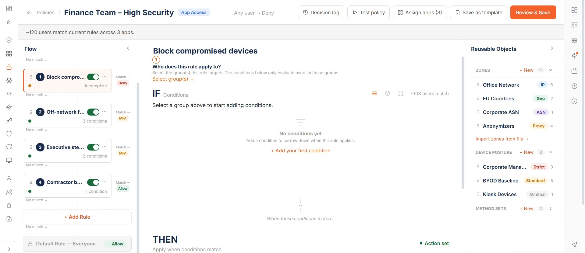
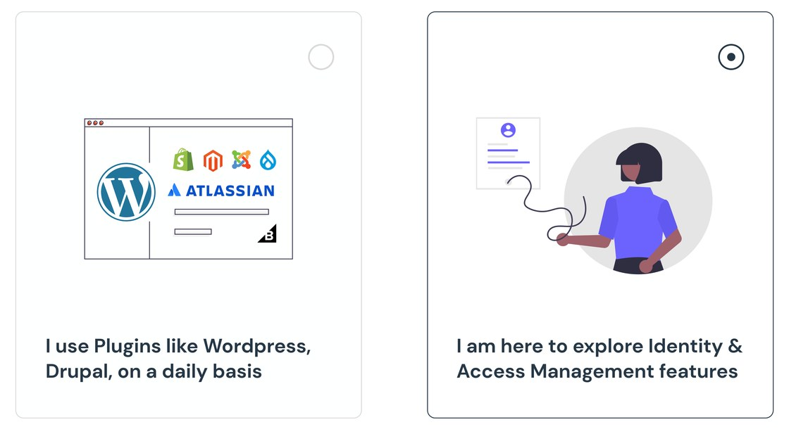
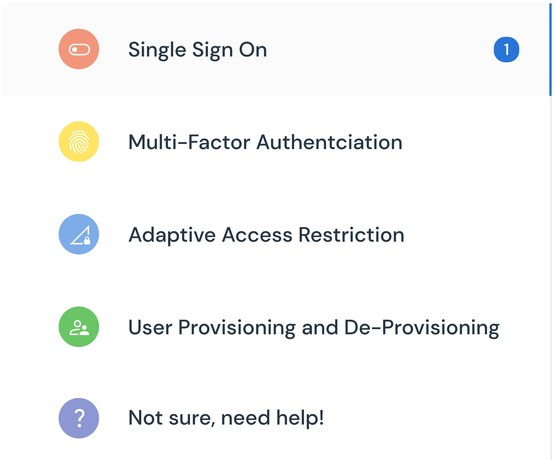
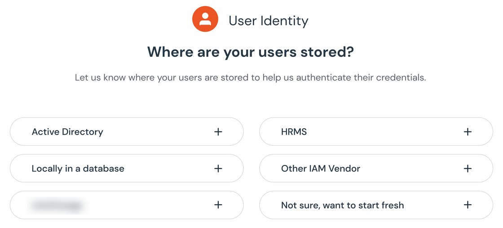
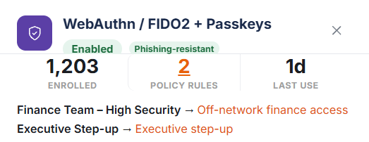
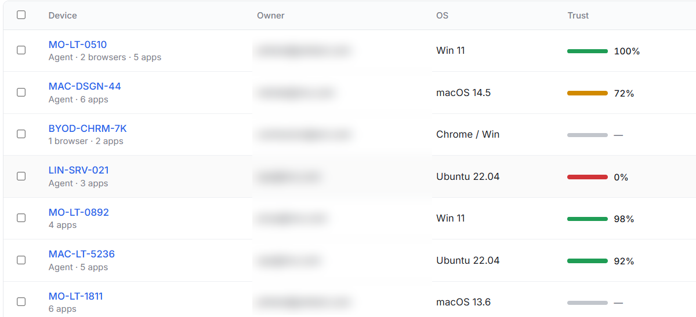
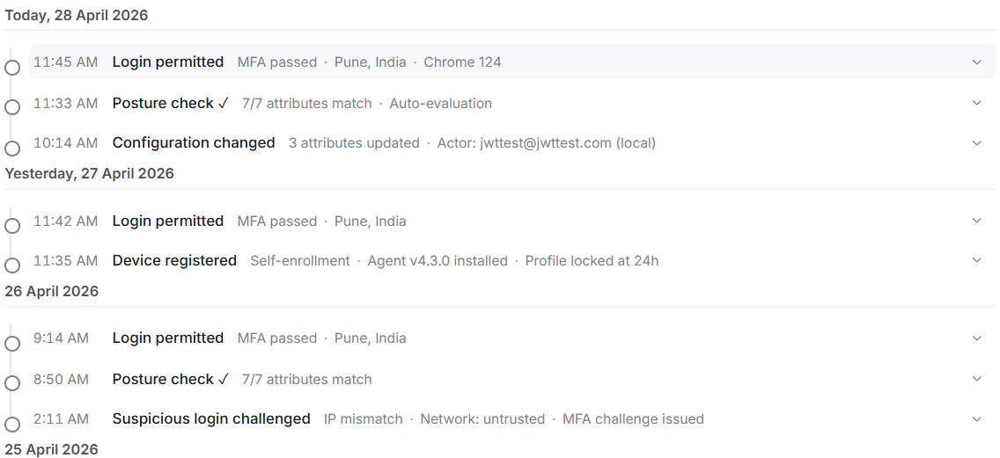

Building the decision layer of an enterprise identity platform
Confidential work. Some details changed or left out. Opinions mine.
Every identity platform answers the same four questions. Who are you. What can you do. Is it really you. Can we prove it happened.
The product had a surface for each. Built separately, years apart, by different teams, each one correct on its own and none of them aware the others existed. I spent a year on this product, and the thing I got most wrong was how long it took me to see that.
ROLE
Strategic design partner, embedded with the Head of Architecture and Product Owners
PRODUCT
Enterprise identity provider (IdP)
12internal teams interviewed before designing onboarding
8–10decisions reversed before they reached build
1 quarterof engineering work unblocked
four questions, four screens, zero conversation between them ↓
Q1Who are you?a separate screen, built separately
Q2What can you do?a separate screen, built separately
Q3Is it really you?a separate screen, built separately
Q4Can we prove it?a separate screen, built separately
The architecture was signed off before I got there.
The model was clean. Every group gets a policy, every policy belongs to a group. It had been through review and nobody had a problem with it.
It took me about a week to find the hole, and once I saw it I couldn't unsee it. Put someone in two groups and the system has two valid answers and no rule for choosing. Engineering says authenticator app. Contractors says hardware key. Both correct, both active, no precedence. The admin gets a lockout they can't explain and a user whose manager is now asking questions.
It survived review because it's flawless for anyone in one group. Which is most people, most of the time, in most demos.
I wrote up exactly how it fails, modelled an alternative, and took it to the Head of Architecture and the product owners. That's not a comfortable meeting. You're telling a room that something they already approved is wrong, and all you have is a worked example.
Show both policies, let the admin choose. Which is solving it at the wrong end. By the time there's a conflict, someone is already locked out and someone else is already on the phone.
So scope moved to the front. You pick groups before you can write a condition at all: "Select the group(s) this rule targets. The conditions below only evaluate users in these groups." You can't build a rule that collides with another one, because the system knows who you've scoped to before you've written anything.
Everything else in the builder follows from that one move.

1234
FIG. 1 — THE POLICY BUILDER · 1 SCOPE FIRST · 2 OBJECTS · 3 ORDER · 4 BLAST RADIUS
2DECISIONConditions became objects, not text you type
WHAT I DIDZones, Device Posture profiles and Method Sets each got their own page and their own object, dragged into rules from a rail. "Office Network" is one object holding six IP ranges. Change it once and every rule using it changes.
WHAT IT COSTIndirection. Read a rule and you see "Office Network," not the six ranges. There's a Change link to open it up. I traded reading-at-a-glance for not maintaining the same list in twelve places.
3DECISIONEvaluation order goes on the canvas
WHAT I DID"Top to bottom. First match wins," printed on the panel, with "No match ↓" between every rule and a locked default at the bottom so there is always a terminal case.
WHAT IT COSTThe order is now something admins can get wrong by dragging. Visible beats hidden, but visible also means editable.
4DECISIONYou see the blast radius while you build
WHAT I DID"~120 users match current rules across 1 app" in the header, "~108 users match" beside the conditions, both updating live.
WHAT IT COSTEvery count is an estimate, and an estimate presented confidently will eventually be wrong in a way someone notices.
I ran the research myself. Then I ignored a quarter of it.
Onboarding had no design owner and no research behind it, so I did it. Twelve teams inside the IdP org: support, engineering, customer success, sales engineering, each seeing a different slice of where new admins got stuck.
Four things came up with everyone. No mental model of how the pieces connect. Setup order arbitrary, with some routes leaving the product half-working. MFA skipped because it felt unrelated to everything they'd just done. And no definition of finished.
Then I designed a questionnaire with fourteen questions in it.
The reasoning felt airtight. Learn enough up front, company size, directory type, compliance posture, what they're migrating from, and I can tailor the whole path. More questions, better fit.
People abandoned it. Not because the questions were bad. Because you'd answer fourteen things and still not have set anything up. It was a form standing between the admin and the product.
So I cut it to eight. Better, still wrong. Five. Drop-off mostly stopped, and now the tailoring was thin enough that I had to ask what the form was still doing there.
Three rounds in, I finally read my own research properly.
I'd been solving data collection. It was sequencing. Twelve teams told me admins didn't know what order to do things in, and my answer was to add a step before the order even began.
The fourth finding was the one I kept skimming. No definition of finished. That isn't something you fix with better tailoring. It's something you fix with a number.
The questions didn't need to branch the product. They needed to name a goal so the product could show a finite list.
DECISIONThree questions, and what they produce is a denominator
WHAT I DID"To Do for Use-Case: Adaptive Multi-Factor Authentication · 2 of 7." Seven is what done means. Two is where you are. Customize sits directly underneath, so a wrong answer at the start is something you change rather than something you restart.
WHAT IT COSTAn admin who'd rather explore is now looking at a recommended path they didn't ask for. And the list is only as good as the use case they picked, so a wrong answer stays wrong until someone finds Customize.
FIG. 2 — SEVEN IS WHAT DONE MEANS. CUSTOMIZE SITS RIGHT UNDER IT.
Three calls came out of the same reframe.
01
The first screen asks who you are, not what you want: "I use Plugins like Wordpress, Drupal" against "I am here to explore Identity & Access Management features." Those two people need different products, and once you know which, nothing downstream has to hedge.

FIG. 3 — WHO YOU ARE, NOT WHAT YOU WANT
02
"Not sure, need help!" is a real option in the use-case list, and "Not sure, want to start fresh" in the directory step. The research said admins had no mental model. That belongs in the UI, not a help doc.


FIG. 4 — "NOT SURE" IS A REAL ANSWER, TWICE
03
Help is ranked by what it costs us: Documentation, then Video, then Request a Demo.
Not "what's wrong with this screen." What question is this screen failing to answer.
Authentication methods looked like an ordering problem.
Fifteen methods in a flat list, sorted by when they were built, a hardware key sitting next to an SMS code as though they were equivalent choices. They aren't, and the page was silent on the only distinction that matters.
So the tiers don't describe what a method does. They describe what it survives. "Cryptographically bound credentials. Cannot be replayed or intercepted," against "One-time codes and push notifications. Effective but susceptible to phishing." We tell admins the weakness of methods we're selling them.
FIG. 5 — THE TIER SAYS WHAT A METHOD SURVIVES
WebAuthn ended up as two cards rather than one: technically one protocol, split by whether the user has to carry something. That's the only difference anyone will ever notice.
And enabled and used are separate facts on the page. SMS reads "512 enrolled · 0 policy rules." It's on, people registered it, nothing references it.

FIG. 6 — ENROLLED AND REFERENCED, COUNTED SEPARATELY
WHAT IT COSTMethods between tiers had to land somewhere and some admins will disagree. The tier is also a judgment that ages. What's phishing-resistant now may not be in three years, and this makes reclassification a visible event instead of a quiet one.
Devices looked like a scoring problem, until I noticed we were pretending to have data we didn't.
A Chromebook with no agent and a Linux server failing every posture check were both going to show up as a number. So no-signal shows a dash and failure shows 0% in red.

FIG. 7 — NO SIGNAL IS A DASH. FAILURE IS 0%.
WHAT IT COSTAdmins have to learn what a dash means. I made the common case slightly harder to stop a dangerous one: reading unmonitored devices as compliant.
The other thing devices needed was memory. Not a log of what happened, which already existed, but a record of what was true. Expand any login and the inputs are frozen at decision time: profile match 7 of 7, posture healthy, location allowed, network trusted, no attribute changes from the previous trusted profile.

FIG. 8 — WHAT WAS TRUE, KEPT PER DECISION
That line closes the loop back to page three. Four months later an auditor asks why this person had access in June, and the system answers with reasoning instead of an outcome.
Three of these came from the same place. The approved policy model, my fourteen-question form, the flat method list: each designed correctly for the case in front of it, by someone who hadn't checked what question the thing was actually being asked.
Eight to ten decisions got overturned on this project. None because I was senior. Every one because someone showed a failure case clearly enough that the better option became obvious, and in one case the someone was me, showing it to myself, three iterations late.
01Architecture is a design problem.By the time you're drawing the policy builder, the decision that determines whether it can work was made somewhere else, weeks earlier. The work that mattered most here was written documents and dependency maps.
02Approved doesn't mean right.Raising a flawed decision late is expensive. Raising it with a worked alternative and a clear failure case is just the job.
03Research can be right while you're reading it wrong.Twelve teams told me admins didn't know when they were done. I answered with a form three times before I understood they needed a number.
04What I'd change.Map the dependencies in week one, not week five. And start the questionnaire at three questions and add upward, rather than starting at fourteen and cutting down.